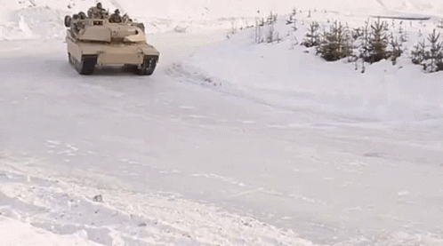
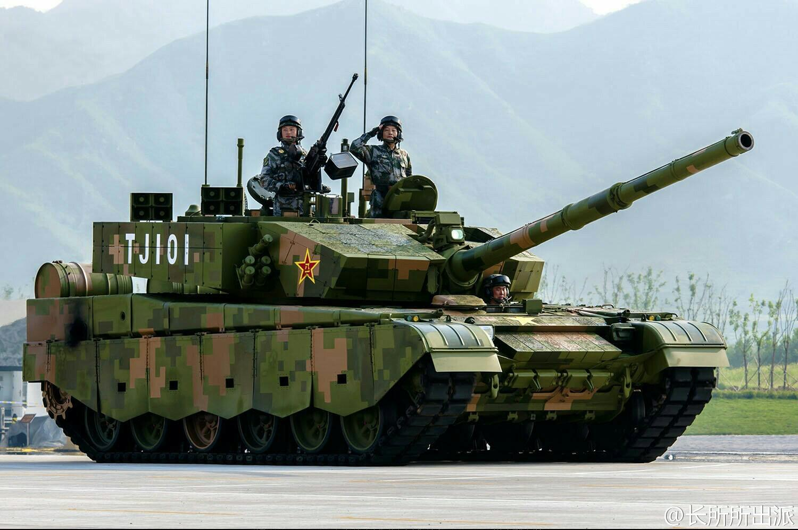
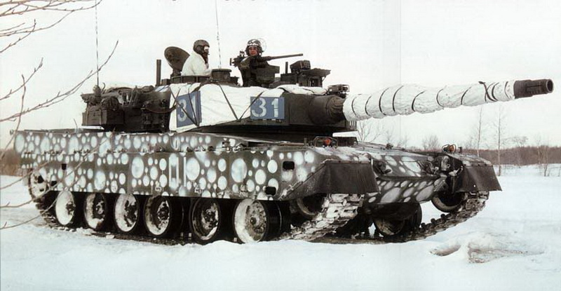
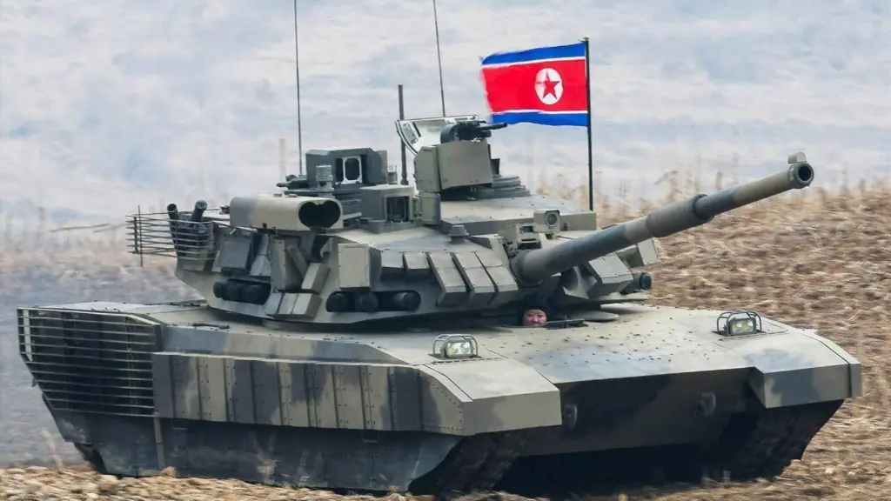

Armies around the world
let's see sum armies aroun the world and their main tanks

People's Liberation Army (China)
The People's Liberation Army (PLA) is the military wing of the Chinese Communist Party (CCP) and the primary armed forces of the People's Republic of China (PRC). It consists of four services—Ground Force, Navy, Air Force, and Rocket Force—and four arms—Aerospace Force, Cyberspace Force, Information Support Force, and Joint Logistics Support Force. It operates under the CCP's absolute control and is led by the Central Military Commission (CMC) with its chairman as commander-in-chief.
Main Tank
The People's Liberation Army (PLA) main battle tank (MBT) force is primarily built around the third-generation Type 99/99A (main, heavy-duty)

Japan Self-Defense Forces
The Japan Self-Defense Forces (Japanese: 自衛隊, Hepburn: Jieitai; JSDF) are the military forces of Japan.[a] The JSDF comprises the Japan Ground Self-Defense Force, the Japan Maritime Self-Defense Force, and the Japan Air Self-Defense Force. They are controlled by the Ministry of Defense with the prime minister as commander-in-chief.
Main Tank
The Japan Ground Self-Defense Force (JGSDF) currently operates the Type 90 as its main battle tank

Korean People's Army(Democratic People's Republic of Korea)
The Korean People's Army (KPA; Korean: 조선인민군; MR: Chosŏn inmin'gun) encompasses the combined military forces of North Korea and the armed wing of the Workers' Party of Korea (WPK). The KPA consists of five branches: the Ground Force, the Naval Force, the Air Force, the Strategic Force, and the Special Operations Forces. It is commanded by the WPK Central Military Commission, which is chaired by the WPK general secretary, and the president of the State Affairs; both posts are currently headed by Kim Jong Un.
Main Tank
The Korean People's Army currently operates the Cheonma-2 as its main battle tank
